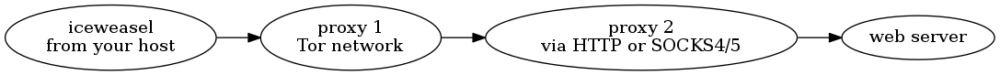

6.11. Proxy Chains¶
ProxyChains tunnels TCP and DNS traffic through a sequence of HTTP and SOCKS4/5 proxies. The meetup demoed ProxyChains configuration using Tor as first proxy follwed by 1 or more additional proxies. Why? Some sites treat traffic from known Tor exit nodes differently. ProxyChains avoids this problem by running traffic through additional proxies after Tor. To run the iceweasel browser using ProxyChains enter:
proxychains iceweasel
The resulting ProxyChain might look like:
A few points to know about ProxyChains:
- Both Tor and ProxyChains support TCP, but not UDP nor ICMP traffic. Using UDP or ICMP will leak information.
- You must manually specify DNS be proxied (see sample code below). If you fail to configure this properly then your web activities will be leaked via your DNS queries.
- The Tor project indicates “using any browser besides Tor Browser Bundle with Tor is a really bad idea”. In fact, setting up a computer to avoid leaking information is hard enough that the Tails distribution exists to solve that very problem.
- /etc/proxychains.conf is the main configuration file:
[ProxyList]section is list of proxies, defaulting to tor (127.0.0.1:9050) being the only proxy.Search ProxyChains.net and Hide My Ass for public proxies to add to
[ProxyList]after tor.One of
dynamic_chain,strict_chain, orrandom_chain(withchain_len) must be specified:
strict_chainuses the proxies in order: any failed proxy stops traffic.
dynamic_chainis astrict_chainthat skips failed proxies.
random_chainrandomly selects proxies (chain_lennumber of them).
Here is a sample terminal session:
# STEP 1. Install and configure tor ...
apt-get install -y tor
service tor start
# If you were using Tor only, you would manually configure
# "Firefox" and "Chromium" to use the Tor socks5 proxy.
# But you may wish instead to use proxychains as described below.
# STEP 2. Setup TorDNS ...
# Configure torrc for DNS
if ! grep '^DNSPort' /etc/tor/torrc 2>&1 1>/dev/null; then
echo 'DNSPort 53' >> /etc/tor/torrc
echo 'AutomapHostsOnResolve 1' >> /etc/tor/torrc
echo 'AutomapHostsSuffixes .exit,.onion' >> /etc/tor/torrc
service tor restart
fi
# Change resolv.conf DNS nameserver to use the localhost
[[ ! -a /etc/resolv.conf.orig ]] && cp /etc/resolv.conf /etc/resolv.conf.orig
cat <<EOF > /etc/resolv.conf
domain mydomain.org
nameserver 127.0.0.1
EOF
# Make sure the dhcp client doesn't clobber resolv.conf
[[ ! -a /etc/dhcp/dhclient.conf.orig ]] && \
cp /etc/dhcp/dhclient.conf /etc/dhcp/dhclient.conf.orig
grep '^nohook resolv.conf' /etc/dhcp/dhclient.conf || \
echo 'nohook resolv.conf' >> /etc/dhcp/dhclient.conf
# STEP 3. Test Tor setup
# Test DNS working through Tor
dig @localhost -p 53 www.google.com
# Tor set up properly only if the following outputs congratulations
torify wget -qO- https://check.torproject.org/ | grep -i congratulations
[[ $? != 0 ]] && echo "You are not using Tor"
# Another test for DNS leaking - this should not show your IP
torify wget -qO- https://dnsleaktest.com/ | egrep -i '(hello|from)'
# STEP 4. Setup ProxyChains - edit /etc/proxychains.conf
# ...
# Change 127.0.0.1 proxy to use SOCKS5.
# Visit sites listed above to get additional proxies
# and add them after tor (127.0.0.1)
# STEP 5. Now you are set to use proxychains:
proxychains iceweasel
# You should visit ...
# https://dnsleaktest.com
# https://check.torproject.org/
# STEP 6. Undo the configuration changes above:
cp /etc/resolv.conf.orig /etc/resolv.conf
cp /etc/dhcp/dhclient.conf.orig /etc/dhcp/dhclient.conf
service tor stop